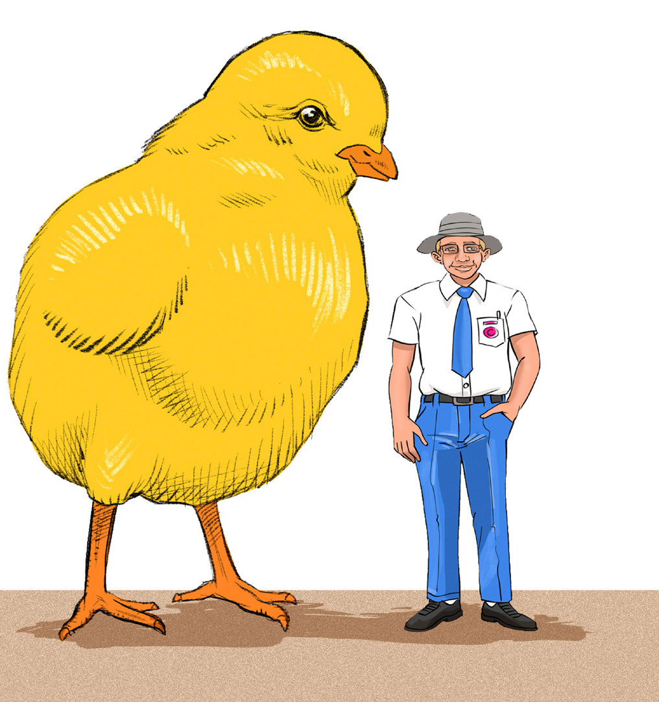
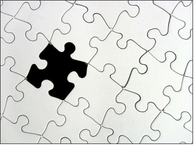

Principle of emphasis
The principle of emphasis shows the most important part of a work of art purposely created to attract the viewer’s attention. Emphasis is achieved when an element dominates others in the artwork. This can be achieved by creating unique features or colours in the artwork. The main purpose of emphasis is to draw the attention of viewers and enhance the visual message. In art, emphasis is also known as dominance. Figure 1.20 shows an example of emphasis.
